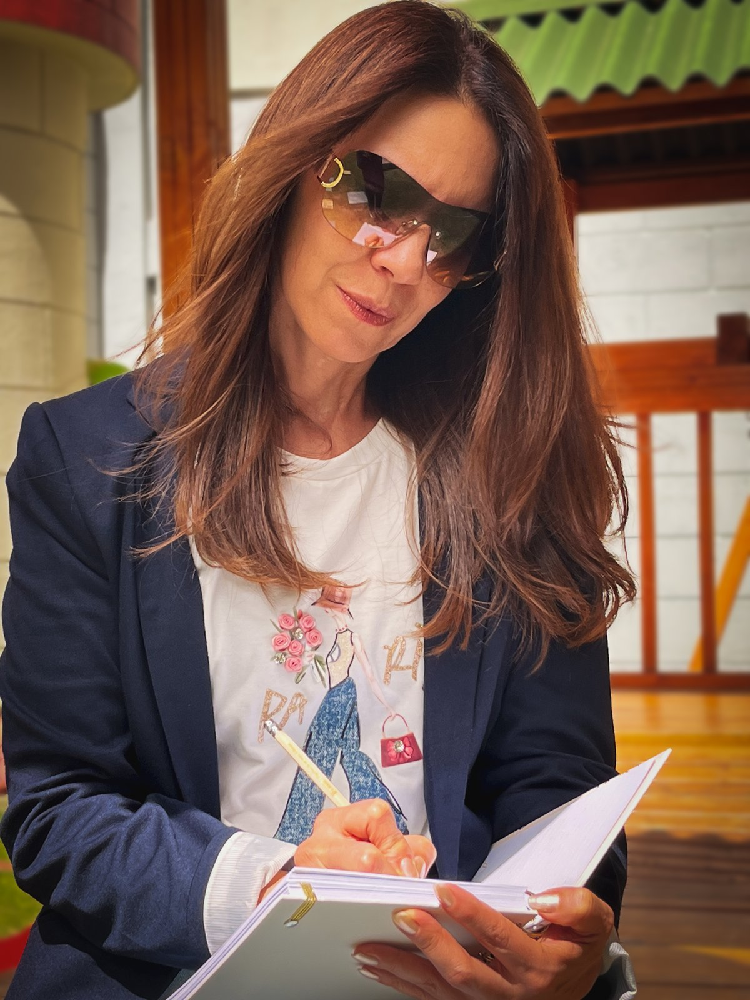

Biografía
Bogotá, Colombia
Anik Jiménez Marulanda es una escritora colombiana radicada en Bogotá, licenciada en Biblia y Teología, administradora de empresas y con estudios en escritura creativa.
Su amor por la literatura nació durante su infancia en Cuba, junto con el sueño de convertirse en autora. En 2020 publicó su primer libro, Cuando la enfermedad se cruzó en el camino, y en 2023 participó con su obra en la Feria Internacional del Libro de Bogotá. Posteriormente, publicó Las cicatrices que aprendí a amar, una obra inspirada en su experiencia con el cáncer, en la que comparte aprendizajes, reflexiones y herramientas para acompañar a pacientes oncológicos, cuidadores y familiares, desde una mirada cercana y guiada por su fe en Dios.
Su pasión por las letras la lleva a explorar diversos géneros, temáticas y universos narrativos. Desde la ficción y la aventura hasta la poesía, la reflexión y las historias de vida, Anik disfruta creando relatos que despiertan la imaginación, conmueven, entretienen e invitan a descubrir nuevas perspectivas. Su escritura se caracteriza por una voz sensible, auténtica y versátil, abierta a explorar la riqueza de las experiencias humanas y las múltiples formas de interpretar el mundo. En algunas de sus obras, la fe, la esperanza y el sentido de la vida encuentran un lugar especial; en otras, son la imaginación, las emociones y el deseo de contar una buena historia los que dan vida a cada página.
Para Anik, escribir es una manera de explorar mundos, compartir ideas y crear conexiones genuinas con sus lectores. Cree en el poder de las historias para acompañarnos, despertar emociones, alimentar la imaginación y ofrecernos nuevas formas de comprender la vida. Por eso, cada obra representa una oportunidad para sorprender, inspirar y dejar algo significativo en quien la descubre. Su propósito es que cada lector encuentre en sus libros una experiencia propia: una historia que lo atrape, unas palabras que lo conmuevan, una idea que lo haga reflexionar o simplemente el placer de dejarse llevar por la magia de la lectura.
